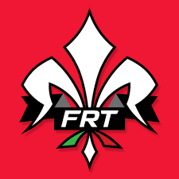

ain't my web design skills sick?
About
MSc in Artificial Intelligence at the University of Florence, Italy. AI Robotics and Computer Vision Specialist @BakerHughes. Ex head of Trajectory and Controls department at Firenze Race Team.
Experience
AI Robotics and Computer Vision Specialist
Baker Hughes
Nov 2024 - Jun 2025 · Florence, Tuscany, Italy
AI Intern
Baker Hughes
Nov 2024 - Jun 2025 · Florence, Tuscany, Italy

Head of Trajectory and Controls
Firenze Race Team
Sep 2021 - Oct 2022 · Florence, Tuscany, Italy
-
My main role was organizing the work of the other members
in the Autonomous Department while creating a coherent
technical direction based on time, capabilities, and manpower.
On the technical side, I primarily focused on the implementation
of control algorithms as well as integrating the control and
path planner within our autonomous architecture through ROS.
Team Member
Firenze Race Team
Sep 2021 - Oct 2022 · Florence, Tuscany, Italy
-
As a member of the Trajectory and Controls Division, I focused
on improving the path planning algorithm, particularly by enhancing
the robustness of the Delaunay triangulation algorithm and refining
curvature estimation. On the control side, I specifically
worked on implementing the physics model for our car in Symulink.